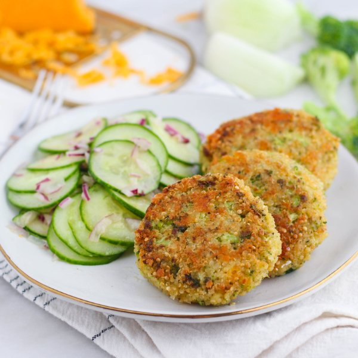

Cheesy Broccoli Quinoa Patties with Tangy Cucumber Salad

Prep Time
35 min
Nutrition (per serving)
689.8 kcalCalories
26.5 gProtein
54 gCarbs
42.4 gFat
Full nutrition table
| Calories | 689.8 kcal |
| Total fat | 42.4 g |
| Saturated fat | 11 g |
| Trans fat | 0.4 g |
| Cholesterol | 192.6 mg |
| Sodium | 428.1 mg |
| Carbohydrates | 54 g |
| Fiber | 8.1 g |
| Sugars | 9.1 g |
| Protein | 26.5 g |
| Potassium | 991.3 mg |
| Calcium | 340.5 mg |
| Iron | 5 mg |
| Vitamin A | 1214.5 IU |
| Vitamin C | 82.1 mg |
| Vitamin D | 42.9 IU |
Cookware
Ingredients
- 2 crownsbroccoli
- ½ (8 oz) blockcheddar cheese
- 16 fl ozchicken or vegetable broth
- 4eggs
- 2English cucumbers
- 1 cupquinoa
- 1 mediumred onion
- black pepper
- extra virgin olive oil
- panko bread crumbs
- red wine vinegar
- salt
Steps
- In a small saucepan, combine quinoa and broth; bring to a boil. Reduce heat to a simmer, cover, and cook for 15 minutes. Remove from heat and spread onto a baking sheet in a thin layer to cool.1 cup quinoa
16 fl oz (2 cups) chicken or vegetable broth - Meanwhile, wash and dry the fresh produce.2 crowns broccoli
2 English cucumbers - Preheat a large skillet over medium heat.
- Peel and small dice the onion; set half aside in a large bowl for the salad.1 medium red onion
- Once the skillet is hot, add oil and swirl to coat the bottom.2 tbsp extra virgin olive oil
- Add the other half of the onion to the skillet; cook, stirring frequently, until softened, 3-4 minutes.
- Finely mince the broccoli (you should have about 4 cups). Add to the skillet along with the onion and cook another 3-4 minutes, stirring frequently. Remove from heat and set aside.
- Grate the cheddar.½ (8 oz) block cheddar cheese
- In a large bowl, combine the cooked quinoa, onion, broccoli, cheese, panko, and eggs.1 cup panko bread crumbs
4 eggs - Form the quinoa vegetable mixture into patties using a ¼-cup measure, firmly pressing the mixture together between your hands.
- Wipe out the skillet with a paper towel and heat over medium-high heat.
- Once the skillet is hot, add oil and swirl to coat the bottom. Place the patties in the skillet and cook for 5-6 minutes; flip and cook another 2-3 minutes, until golden brown on both sides. Work in batches if necessary.3 tbsp extra virgin olive oil
- Trim the ends of the cucumber; then thinly slice.
- Add cucumber, oil, vinegar, salt, and pepper to the bowl with the onion. Stir to combine.2 tbsp extra virgin olive oil
2 tbsp red wine vinegar
½ tsp salt
¼ tsp black pepper - To serve, divide the quinoa patties and cucumber salad between plates. Enjoy!